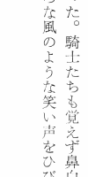

〜2014年11月中旬〜
あまり考えずにスキャンした初期のものを見るとうすくてかなり困ったものになってる。
いちいち最適なパラメータを試行錯誤するのも面倒だなといろいろ探してみたら、
-auto-gammaが結構いい感じだ。ただ文字がつぶれがち。

この場合は-gamma 0.3ぐらいが丁度いいかな。
なかなか興味深い話だ。
% echo 'main(){(void)sizeof(char[0]);}' | gcc -xc -c - -o /dev/null
% echo 'main(){(void)sizeof(char[-1]);}' | gcc -xc -c - -o /dev/null
<stdin>: In function ‘main’:
<stdin>:1:1: error: size of unnamed array is negative
常数同士の計算ならコンパイル時に行なわれるので、
その結果がエラーになるように調整すればいいってわけだな。
TOKYO MXでの録画ばかり変だったのでTOKYO MXが原因かと思ったらNHKでも起きた。
よくみるとnasneではなくtorneだけなのでこっちが原因か。
こまったねえ。J:COMもあるからそっちで代用するとして、nasne安いしもう1台買うか。
Google Chromeで。最初はAOL Readerの不具合かと思ったが、
そのリンクをdiigoへ登録してもだめだった。
なにか拡張が悪さしてるんだろうと調べてみると、
ABPの
日本用フィルタ (ABP Japanese filters)のせいだった。
無効にして様子見。
念の為アンテナレベル確認してみると、あららめちゃくちゃ低い。
アンテナ線が原因か。ちょっと触るだけで変化する。
というわけでtorne自身は問題なかった。疑ってすまん。
最初は普通にこんな感じで作ってみたが、納得せず。
% jq -n -r 'range(1;101)|if .%15==0 then "FizzBuzz" elif .%3==0 then "Fizz" elif .%5==0 then "Buzz" else . end'
で、いろいろ調べてみると//なんて便利な技があった。
Perl版を思い起こすとこんな感じになる。
% jq -n -r 'range(1;101)|. as$i|[["Fizz"][.%3],["Buzz"][.%5]]|add//$i'
いや、ゴルフする必要はないんだが。
%はたぶん1.4ぐらいじゃないと動かない。
そうだ。jqでもできるんだった。
% jq -n 'range(1;101)'
ゴルフ場に入れるなら、sedと同じように入力がないときは
-nかecho null|にする必要があるかな。
ちょっと簡単なのを解いてみたが、一応なんとかなりそげ。
% jq -n -r '"Hello, World!"' Hello, World! % echo hogehoge | jq -R -r . hogehoge % echo $'hoge\n\nhoge\n\nhoge' | jq -R -r 'select(.!="")' hoge hoge hoge
ずっとjqばかりだが、今日はCSVだ。
splitがあるので簡単に扱える。
% echo -e 'a,b,c,d,e,f\ng,h,i,j,k,l'
a,b,c,d,e,f
g,h,i,j,k,l
% echo -e 'a,b,c,d,e,f\ng,h,i,j,k,l' | jq -R -c 'split(",")'
["a","b","c","d","e","f"]
["g","h","i","j","k","l"]
第0と第2を抜き出したければ、こんな感じ。
% echo -e 'a,b,c,d,e,f\ng,h,i,j,k,l' | jq -R -c 'split(",") | [.[0,2]]'
["a","c"]
["g","i"]
addすれば結合。-rで文字列の""がなくなる。
% echo -e 'a,b,c,d,e,f\ng,h,i,j,k,l' | jq -R -c 'split(",") | [.[0,2]] | add'
"ac"
"gi"
% echo -e 'a,b,c,d,e,f\ng,h,i,j,k,l' | jq -R -c -r 'split(",") | [.[0,2]] | add'
ac
gi
数値はちょっと面倒。
% echo -e '1,2,3\n4,5,6' | jq -R -c 'split("\n")|map(split(",")|.[]|tonumber)'
[1,2,3]
% echo -e '1,2,3\n4,5,6' | jq -R -c 'split("\n")|map(split(",")|.[]|tonumber) | add'
6
15
*.shを編集しているときにdwとかするとなぜか.も含まれてしまう。
いつからvimがそんな挙動に変わったのか忘れたが、やっと重い腰を上げた。
まずは~/.vimrcを二分法で探してみた。やはりsyntax onが原因か。
一応:scriptnamesで確認する。
% vim -u NONE -c 'syntax on|redir!>foo.log|scriptnames|redir END|q' foo.sh % cat foo.log; echo 1: /usr/share/vim/vim74/syntax/syntax.vim 2: /usr/share/vim/vim74/syntax/synload.vim 3: /usr/share/vim/vim74/syntax/syncolor.vim 4: /usr/share/vim/vim74/filetype.vim 5: /usr/share/vim/vim74/syntax/sh.vim
5のsh.vimだな。中を見てみると先頭部分にこんな記述が。
" AFAICT "." should be considered part of the iskeyword. Using iskeywords in
" syntax is dicey, so the following code permits the user to
" g:sh_isk set to a string : specify iskeyword.
" g:sh_noisk exists : don't change iskeyword
" g:sh_noisk does not exist : (default) append "." to iskeyword
if exists("g:sh_isk") && type(g:sh_isk) == 1 " user specifying iskeyword
exe "setl isk=".g:sh_isk
elseif !exists("g:sh_noisk") " optionally prevent appending '.' to iskeyword
setl isk+=.
endif
というわけで、~/.vimrcに let g:sh_noisk=1 を追加して解決した。